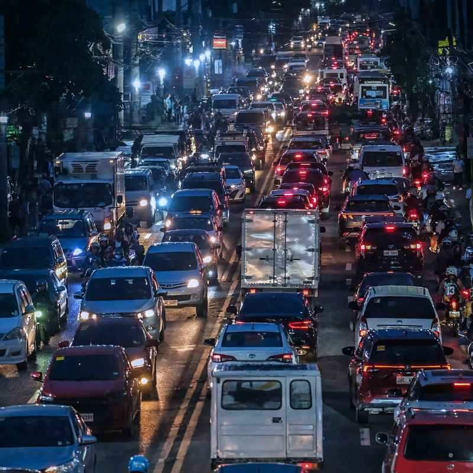

If your Kalag-Kalag plans involve a car, a jeepney or a taxi anywhere in Cebu City, getting to the cemetery may take longer than the visit itself. The Cebu City Transportation Office (CCTO) is putting 553 personnel on the roads around the city's major cemeteries for All Saints' Day and All Souls' Day, with road closures, parking bans and limits on public utility vehicles near the busiest gates.
This year the two days land on Sunday, 1 November, and Monday, 2 November, and both are special non-working days under Proclamation No. 1006. Add a Saturday that many workers already have off, and the city gets a three-day weekend in which trips to the cemetery, the mall and the bus terminal all crowd onto the same few avenues.
What follows is a cemetery-by-cemetery look at what the traffic plan changes, where you can and can't park, and a few timing habits that save real hours. For the rules on what you can bring inside, plus the ferry and port situation, see our Undas 2026 guide for Cebu and Negros.

What the City Is Putting on the Road
The 553-strong team is more than traffic enforcers. It includes towing crews, street sweepers, mobile patrols, engineering staff and deputised Land Transportation Office officers, along with task groups assigned to vendors and non-motorised transport. The city's Eagle's Eye surveillance team and radio units will coordinate the operation as it happens.
Two rules apply at every cemetery. Vendors must stay in their designated street areas, off the carriageway, and emergency responders keep their own parking spaces. Expect enforcers to wave off anyone who stops in a space kept for an ambulance or fire truck, even for a quick flower drop.
Police are part of the picture too. The Cebu City Police Office is stepping up patrols in and around the cemeteries and setting up police assistance desks, while the city's disaster office and the Bureau of Fire Protection will station ambulances, medical teams and fire trucks at key points.
Cemetery by Cemetery: Roads, Parking and Jeepneys
Carreta and Doña Pepang
These two get the biggest single crew, 25 personnel, working General Maxilom Avenue and M.J. Cuenco Avenue. Parking is allowed only in designated areas. Jeepneys, modern jeepneys, trucks and buses face restrictions here, except units on the Mabolo route. Last year Maxilom stayed open to traffic but allowed drop-offs only, so plan to be let off near the gate and send the driver on, rather than circling for a slot that won't appear.
Calamba Cemetery
Twenty-one personnel handle rerouting, parking zones and vendors around Calamba, and trucks, buses, tartanillas and e-bikes are restricted. In 2025, Lucio Drive was shut from 30 October to 2 November while both lanes of V. Rama Avenue stayed open. A similar setup is likely, so treat V. Rama as slow going for the whole weekend.
Pardo Cemetery
Space is the problem in Pardo. Parking near the cemetery is kept for one fire truck and one ambulance, and even the 15 on-duty personnel have to leave their vehicles inside the Pardo Church compound. Visitors should not count on parking anywhere close. A jeepney ride, or parking well away and walking the last stretch, is the realistic plan.
Queen City Memorial Gardens
Jeepneys, trucks and buses are banned from the area, and 11 personnel will manage the designated visitor parking. Last year A. Soriano Avenue was closed to public utility vehicles but open to private cars for drop-off and parking, with Gaisano Mall taking the overflow. Commuters should expect to be dropped short of the gate and finish on foot.
Talamban Catholic and Cabantan Public Cemeteries
Both have 10 personnel and both will close roads so families can walk safely, with parking kept for emergency vehicles only. In 2025 the road to Cabantan in Barrio Luz was closed to everything except ambulances and patrol cars. Arrive ready to walk.
Cebu Veterans Memorial Park and Cebu Memorial Park
At Veterans Memorial Park, non-emergency vehicles can neither enter nor park, under a crew of eight. Cebu Memorial Park has nine personnel enforcing a no-parking zone near the cemetery, and public utility vehicles are restricted from entering.
The South Road Squeeze
N. Bacalso Avenue carries both cemetery traffic and the buses heading in and out of the Cebu South Bus Terminal, which makes it one of the tightest roads of the long weekend. Last year's plan kept buses and minibuses from Talisay in the innermost lane and barred V-hire vans from the south from using N. Bacalso at all. Vans heading back south went by way of Leon Kilat Street, Sanciangko, C. Padilla and the South Road Properties.
If that scheme returns, a van ride into the city will drop you in a different spot than usual, and a southbound trip home may take the SRP. Check the CCTO's advisories on the city's official pages the night before you travel, since lane rules are usually announced only days ahead.
Timing That Beats the Jam
The single biggest saving is the clock. Roads around the cemeteries are at their calmest in the early morning, before the heat sets in and before families who slept in start to arrive. Many people come late in the afternoon to light candles once the sun drops, so that stretch, and the evening after it, is when the side streets lock up.
If your family can be flexible, Saturday, 31 October, is a good day to clean the tomb and leave flowers, and Tuesday, 3 November, is calm enough for a quiet return visit. Both days spare you the peak.
Undas also caps what has already been a busier October in Cebu, so build slack into anything with a fixed departure time. Sea travel is heavy nationwide as well: the Philippine Ports Authority expects about 1.93 million passengers between 27 October and 5 November, and the Coast Guard's Undas operation runs from 29 October to 3 November. If you are crossing to Negros by sea or road over the long weekend, add an extra hour just for the drive to the pier or terminal.
Before You Head Out on Sunday
Decide where you will be dropped off before you leave the house, not when you reach a closed road. Charge your phone, agree on a meeting point near the gate, and keep small bills for the jeepney and the vendors outside. Leave the car at home if you can. At most of the city's cemeteries this year, the last few hundred metres will be on foot anyway, and the walk is far shorter than the queue of cars waiting to turn in.
Sources
City set to roll out traffic plan ahead of Kalag-Kalag – The Freeman, 21 October 2026
Cebu City police prepare security for Undas 2026 – SunStar Cebu, 17 October 2026
Kalag-Kalag traffic plan: Rerouting, lane rules set near major cemeteries – SunStar Cebu, 28 October 2025
Three-day weekend set for Undas 2026 – Cebu Daily News, 23 September 2026
1.93 million Filipinos will travel by sea this Undas – Astig.ph, 21 October 2026

Comments
No comments yet. Been here recently? Share a tip or ask a question.
Leave a Reply